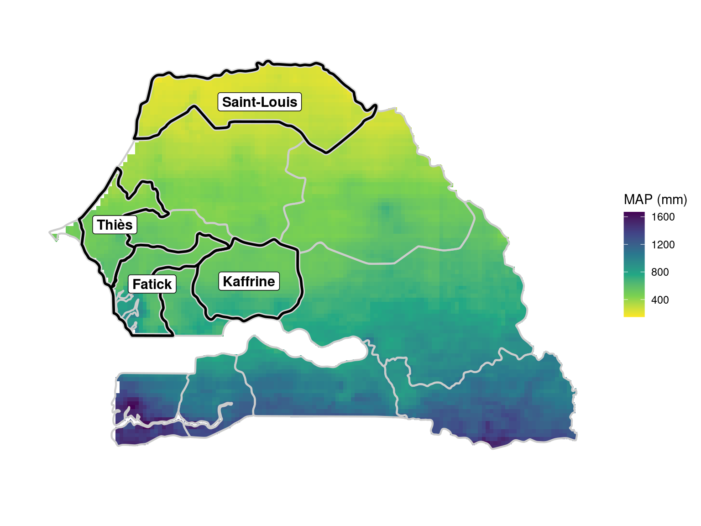
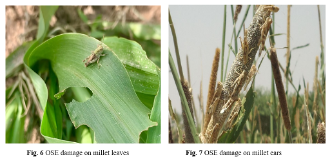
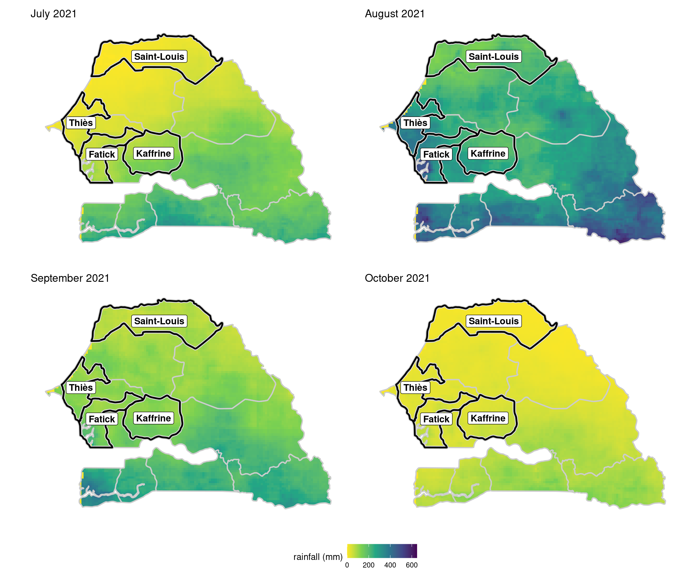
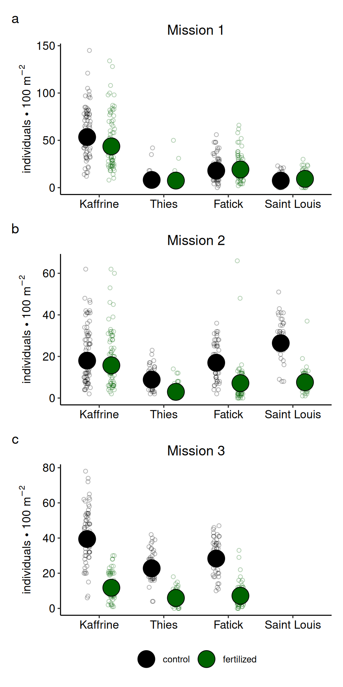
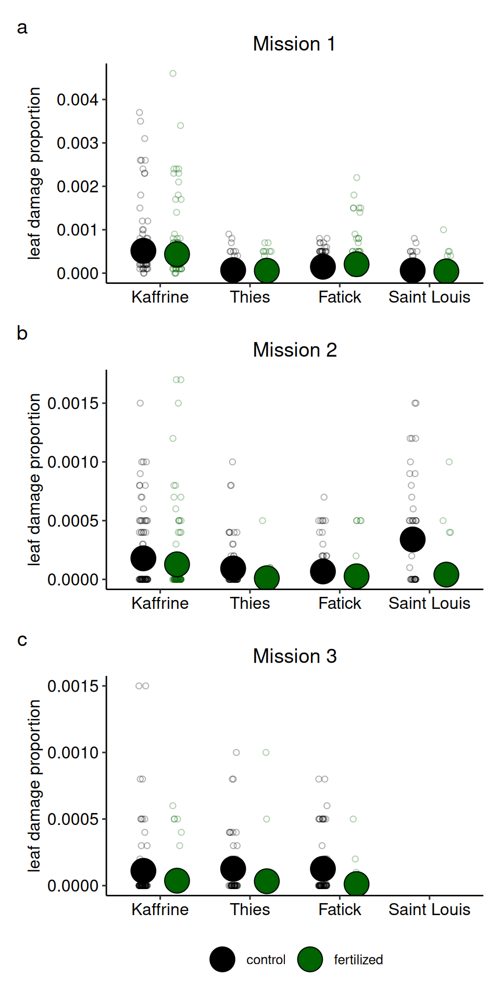
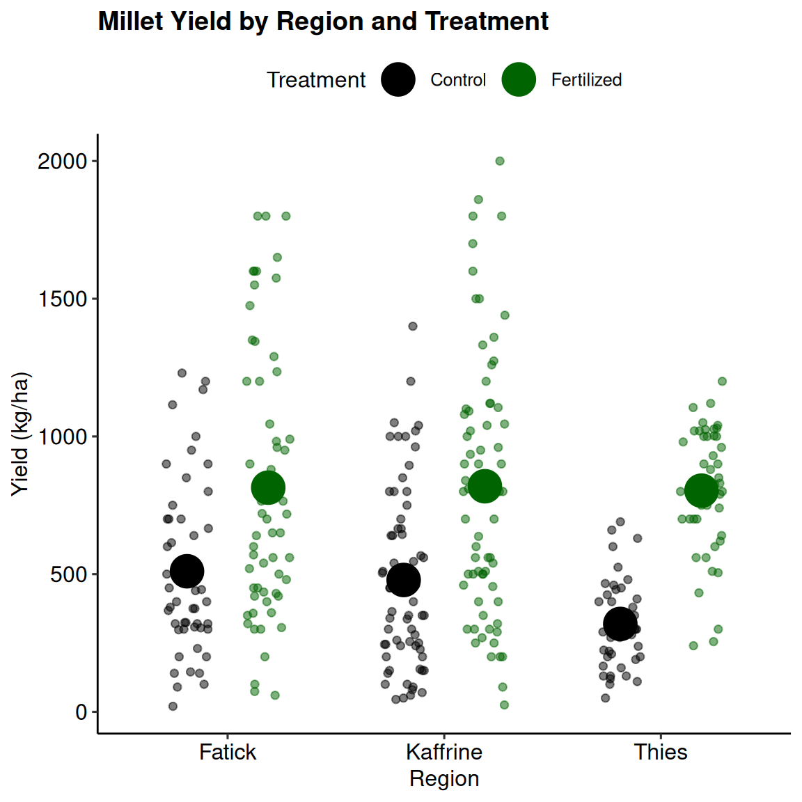
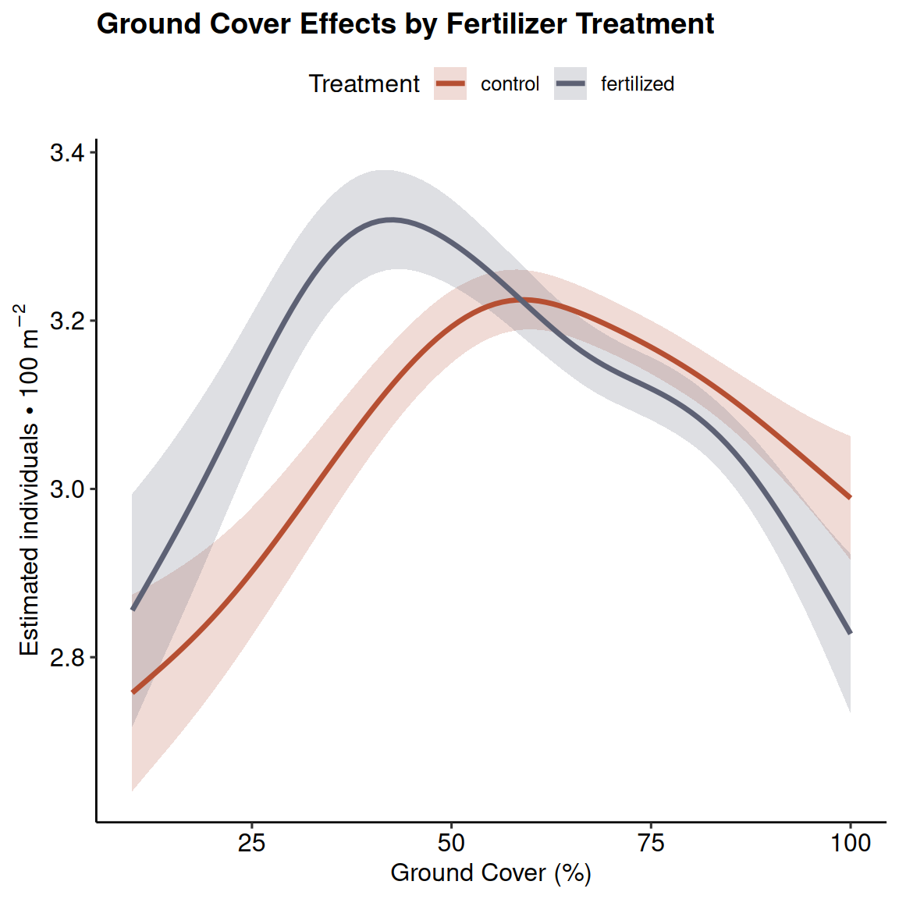
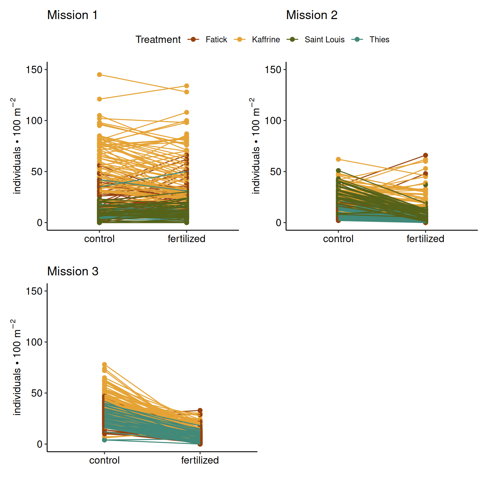
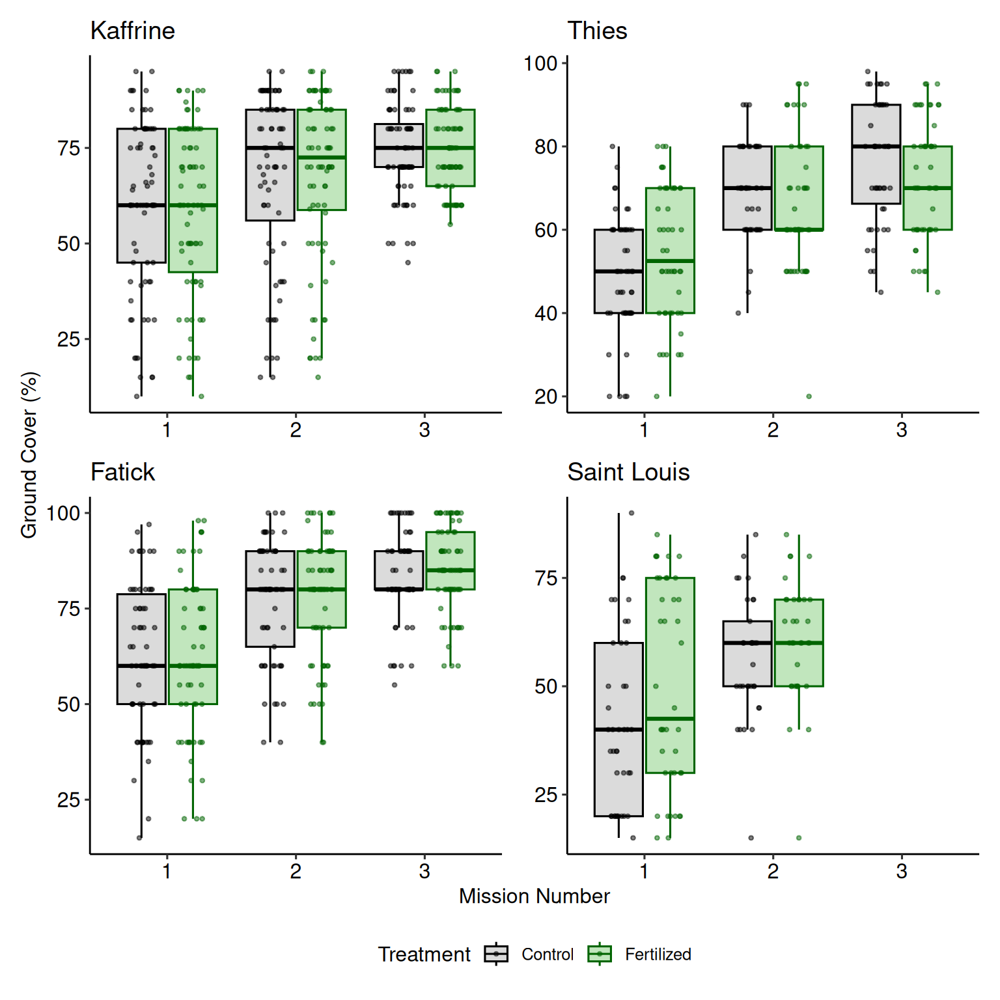
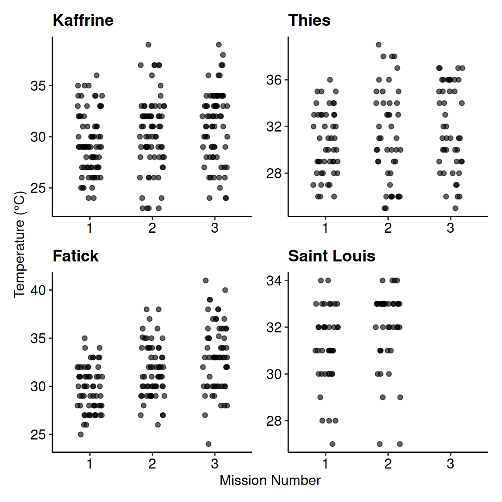

Statistical Methods and Results for grasshopper Range Analysis
Effects of fertilizer treatment on Senegalese grasshopper (Oedaleus senegalensis) density, crop damage, and millet yield
1 Statistical analyses
1.1 General statistical and programatic approach
All statistics were conducted in R version 4.5.2 (2025-10-31) (R Core Team, 2024) using generalized additive mixed models (GAMMs) and generalized linear mixed models (GLMMs) implemented with mgcv (Wood 2017, 2011, 2004) and glmmTMB (Brooks et al. 2017; McGillycuddy et al. 2025) packages, respectively. Models were appriased/validated using DHARMa (Hartig 2024) and gratia (Simpson 2024). Model selection when needed was done using AIC. Estimated marginal means and pairwise comparisons were calculated using the emmeans package (Lenth and Piaskowski 2025). Data visualization was performed using the ggplot2 package (Wickham 2016) along with extensions from the tidyverse suite of packages (Wickham et al. 2019). All code and data are versioned on github at: github.com/ddlawton/OSE-Range-Analysis. Upon publication a github archive snapshot will be created and stored in Zenodo for reproducibility with a DOI and citation.
1.2 Overall and mean monthly map generation
Maps of mean annual precipitation (MAP) and monthly rainfall patterns were generated using Climate Hazards Center Infrared Precipitation with Stations (CHIRPS) data (Funk et al. 2015) processed in Google Earth Engine (Gorelick et al. 2017) and imported into R for visualization with the terra (Hijmans 2025) and tidyterra (Hernangómez 2023) packages. Senegal administrative boundaries were obtained from the Natural Earth public domain map dataset using the rnaturalearth package (Massicotte and South 2025).
1.3 Locust density and damage models
For both density and damage, separate models were created for each of the three survey missions to assess how effects changed over time relative to the timing of fertilizer application. We specified the models as generalized linear mixed models (GLMMs) with a Poisson family for density and a tweedie family for damage percent (scaled to proportion). In both cases, we included fertilizer treatment, region, and their interaction as fixed effects, and farmer as a random effect to account for repeated measures since each farmer has a control and fertilized field.
1.4 Millet yield model
For millet yield, we specified a GLMM with a tweedie family to account for the continuous, positive, and right-skewed nature of yield data. Like the locust density and damage models, we included fertilizer treatment, region, and their interaction as fixed effects, and farmer as a random effect to account for repeated measures.
1.5 Ground cover × fertilizer mediation of grasshopper density
To test whether the effect of fertilizer on grasshopper density is mediated by ground cover, we fit a unified generalized additive model (GAM) with a Tweedie family to account for overdispersed count data. The model included fertilizer treatment, mission number, their interaction, and region as fixed effects, a random effect for farmer, and, critically, a by-variable smooth term allowing the relationship between ground cover and grasshopper density to vary by fertilizer treatment. Constructing a unified model allowed as to look directly at the mediation effect of ground cover on the fertilizer treatment effect on grasshopper density while accounting for the main effects of fertilizer treamtment and mission.
2 Results
2.1 Locust density through space and time
Temperature at the time of the survey did not affect O. senegalensis density after accounting for region, mission, and farmer (p = 0.21). The full temperature statistical model is in Table 8 and raw data are shown in Figure 10.
2.2 Locust developmental stages and generations through space and time
The locust surveys enabled us to identify the developmental stages and likely generations of Oedaleus senegalensis present during each mission (?@tbl-dev-stages). We identified three generations (G1, originating from the eggs of the previous season’s last generation, and G2 and G3) in the Thies, Fatick, and Kaffrine regions. In Saint Louis, only the G1 and G2 generations were observed. All developmental stages were identified, from eggs, through nymphal instars (1-5), to adults.
| Kaffrine | Thies | Fatick | Saint - Louis | |
|---|---|---|---|---|
| Mission 1 | Jul. 27 - Aug. 3 | Aug. 13 - 18 | Aug. 15 - 20 | |
| G1 - 4th instar G1 - 5th instar G1 - Adult Eggs laid by G1 |
G1 - Adult Eggs laid by G1 G2 - 1st instar |
G1 - 4th instar G1 - 5th instar G1 - Adult Eggs laid by G1 |
G1 - 1st instar G1 - 2nd instar |
|
| Mission 2 | Aug. 30 - Sep. 4 | Sep. 6 - 10 | Sep. 20 - 25 | |
| G1 - Adult G2 - 1st instar G2 - 2nd instar |
G1 - Adult Eggs laid by G1 G2 - 1st instar |
G2 - 4th instar G2 - 5th instar G2 - Adult |
G1 - Adult Eggs laid by G1 G2 - 1st instar |
|
| Mission 3 | Sep. 28 - Oct. 5 | Oct. 4 - 9 | Oct. 19 | |
| G2 - 4th instar G2 - 5th instar G2 - Adult G3 - 1st instar |
G2 - Adult Eggs laid by G2 G3 - 1st instar G3 - 2nd instar |
G2 - Adult Eggs laid by G2 G3 - 1st instar G3 - 2nd instar |
G2 - Adult Eggs laid by G2 |
Developmental stages and generations present during each of the missions across the four regions. The mission dates for each region are noted above the list of stages and generations present. The generations are noted by G followed by the generation number; Senegalese grasshoppers typically have three generations each year, as rains allow.
2.3 Crop impact
2.3.1 Senegalese grasshopper density
Fertilizer treatment progressively suppressed grasshopper density over the growing season, with effects intensifying from non-significant early in the season (Mission 1: p = 0.097) to highly significant by late season (Mission 3: estimate = -1.371, p < 0.001; Table 1). This temporal pattern reflected both fertilizer application and cumulative grasshopper population suppression. Regional responses varied significantly, with Kaffrine showing consistently elevated densities across all treatments and missions. By mission 3, grasshopper densities in control fields were 3.4-times higher than in fertilized fields in Kaffrine and 3.8-times higher in Thiès. Across all missions, the suppressive effect of fertilization in Kaffrine ranged from 1.1–3.4-fold (Table 2).
2.3.2 Grasshopper damage to millet
Crop damage mirrored grasshopper density patterns, intensifying throughout the missions and showing strongest fertilizer suppression by mission 3 (estimate = -2.384, p < 0.001; Table 3). Control fields had 3–11 times higher damage than fertilized fields by the last mission, with effects particularly pronounced in Fatick and Kaffrine (Table 4).
2.3.3 Millet yield
Fertilizer treatment significantly increased millet yield across all harvested regions (estimate = 0.582, p < 0.001), with the strongest effect in Thiès (p < 0.001; Table 5, Table 6). Control fields had 56% lower yield than fertilized fields in Fatick and Kaffrine, representing an approximately 1.8-fold increase from fertilization. Saint Louis was excluded from yield analysis due to insufficient rainfall for crop maturation.

2.4 Study region maps
2.4.1 Mean Annual Precipitation
2.4.2 Monthly Rainfall Patterns (2021)

2.5 grasshopper Density Analysis

2.6 OSE Damage Analysis

2.7 Millet Yield Analysis

2.8 Ground Cover Mediation of Fertilizer Effects on grasshopper Density
Ground cover mediated fertilizer effects on grasshopper density differently between treatments (deviance explained: 60%; Table 7). In fertilized fields, density peaked at ~40% ground cover and declined at higher and lower values, whereas control fields showed low densities until 60–70% cover, after which densities increased substantially.

3 Supplementary Figures
3.1 Raw grasshopper count by treatment, mission, and region

3.2 Ground Cover by Fertilizer Treatment

3.3 Temperature Variation Across Missions and Regions

4 Supplementary Tables
4.1 grasshopper Density Analysis Tables
4.1.1 Model Summaries by Mission
| Grasshopper Density Model Summaries by Mission | |||||
| Effect | Term | Estimate | Std. Error | Statistic | P-value |
|---|---|---|---|---|---|
| 1 | |||||
| fixed | (Intercept) | 2.967 | 0.096 | 30.903 | 0.000 |
| fixed | fertilized | 0.065 | 0.039 | 1.658 | 0.097 |
| fixed | Kaffrine | 1.090 | 0.095 | 11.423 | 0.000 |
| fixed | Saint Louis | −0.878 | 0.126 | −6.995 | 0.000 |
| fixed | Thies | −0.789 | 0.117 | −6.767 | 0.000 |
| fixed | percent_ground_cover | −0.001 | 0.001 | −1.322 | 0.186 |
| fixed | fertilized:Kaffrine | −0.267 | 0.045 | −5.890 | 0.000 |
| fixed | fertilized:Saint Louis | 0.153 | 0.081 | 1.883 | 0.060 |
| fixed | fertilized:Thies | −0.155 | 0.079 | −1.964 | 0.050 |
| random | farmer | 0.532 | NA | NA | NA |
| 2 | |||||
| fixed | (Intercept) | 3.491 | 0.140 | 24.988 | 0.000 |
| fixed | fertilized | −0.863 | 0.056 | −15.539 | 0.000 |
| fixed | Kaffrine | 0.057 | 0.098 | 0.582 | 0.561 |
| fixed | Saint Louis | 0.441 | 0.123 | 3.599 | 0.000 |
| fixed | Thies | −0.655 | 0.115 | −5.672 | 0.000 |
| fixed | percent_ground_cover | −0.009 | 0.002 | −6.050 | 0.000 |
| fixed | fertilized:Kaffrine | 0.729 | 0.067 | 10.927 | 0.000 |
| fixed | fertilized:Saint Louis | −0.384 | 0.088 | −4.367 | 0.000 |
| fixed | fertilized:Thies | −0.223 | 0.107 | −2.091 | 0.037 |
| random | farmer | 0.516 | NA | NA | NA |
| 3 | |||||
| fixed | (Intercept) | 3.439 | 0.149 | 23.123 | 0.000 |
| fixed | fertilized | −1.371 | 0.051 | −26.973 | 0.000 |
| fixed | Kaffrine | 0.330 | 0.064 | 5.135 | 0.000 |
| fixed | Thies | −0.218 | 0.074 | −2.953 | 0.003 |
| fixed | percent_ground_cover | −0.001 | 0.002 | −0.717 | 0.474 |
| fixed | fertilized:Kaffrine | 0.161 | 0.063 | 2.533 | 0.011 |
| fixed | fertilized:Thies | 0.026 | 0.083 | 0.317 | 0.751 |
| random | farmer | 0.319 | NA | NA | NA |
| Note: Models fit separately for each mission. Random effect shown as standard deviation. | |||||
4.1.2 Pairwise Comparisons by Mission
| Grasshoppe Density Pairwise Comparisons by Mission | ||||||
| Contrast | Ratio | Std. Error | df | null | z Ratio | P-value |
|---|---|---|---|---|---|---|
| 1 | ||||||
| control Fatick / control Kaffrine | 0.336 | 0.032 | Inf | 1 | −11.423 | 0.000 |
| control Fatick / control Saint Louis | 2.406 | 0.302 | Inf | 1 | 6.995 | 0.000 |
| control Fatick / control Thies | 2.200 | 0.256 | Inf | 1 | 6.767 | 0.000 |
| control Fatick / fertilized Fatick | 0.937 | 0.037 | Inf | 1 | −1.658 | 0.715 |
| control Fatick / fertilized Kaffrine | 0.412 | 0.039 | Inf | 1 | −9.282 | 0.000 |
| control Fatick / fertilized Saint Louis | 1.934 | 0.236 | Inf | 1 | 5.398 | 0.000 |
| control Fatick / fertilized Thies | 2.408 | 0.281 | Inf | 1 | 7.520 | 0.000 |
| control Kaffrine / control Saint Louis | 7.152 | 0.867 | Inf | 1 | 16.236 | 0.000 |
| control Kaffrine / control Thies | 6.541 | 0.732 | Inf | 1 | 16.785 | 0.000 |
| control Kaffrine / fertilized Kaffrine | 1.224 | 0.028 | Inf | 1 | 8.872 | 0.000 |
| control Kaffrine / fertilized Saint Louis | 5.749 | 0.678 | Inf | 1 | 14.838 | 0.000 |
| control Kaffrine / fertilized Thies | 7.158 | 0.804 | Inf | 1 | 17.523 | 0.000 |
| control Saint Louis / control Thies | 0.915 | 0.125 | Inf | 1 | −0.654 | 0.998 |
| control Saint Louis / fertilized Saint Louis | 0.804 | 0.057 | Inf | 1 | −3.062 | 0.046 |
| control Saint Louis / fertilized Thies | 1.001 | 0.138 | Inf | 1 | 0.006 | 1.000 |
| control Thies / fertilized Thies | 1.094 | 0.075 | Inf | 1 | 1.315 | 0.893 |
| fertilized Fatick / control Kaffrine | 0.359 | 0.034 | Inf | 1 | −10.857 | 0.000 |
| fertilized Fatick / control Saint Louis | 2.567 | 0.320 | Inf | 1 | 7.565 | 0.000 |
| fertilized Fatick / control Thies | 2.348 | 0.272 | Inf | 1 | 7.381 | 0.000 |
| fertilized Fatick / fertilized Kaffrine | 0.439 | 0.042 | Inf | 1 | −8.695 | 0.000 |
| fertilized Fatick / fertilized Saint Louis | 2.064 | 0.250 | Inf | 1 | 5.972 | 0.000 |
| fertilized Fatick / fertilized Thies | 2.569 | 0.298 | Inf | 1 | 8.136 | 0.000 |
| fertilized Kaffrine / control Saint Louis | 5.844 | 0.707 | Inf | 1 | 14.584 | 0.000 |
| fertilized Kaffrine / control Thies | 5.345 | 0.598 | Inf | 1 | 14.984 | 0.000 |
| fertilized Kaffrine / fertilized Saint Louis | 4.698 | 0.554 | Inf | 1 | 13.123 | 0.000 |
| fertilized Kaffrine / fertilized Thies | 5.849 | 0.657 | Inf | 1 | 15.712 | 0.000 |
| fertilized Saint Louis / control Thies | 1.138 | 0.153 | Inf | 1 | 0.961 | 0.980 |
| fertilized Saint Louis / fertilized Thies | 1.245 | 0.168 | Inf | 1 | 1.620 | 0.738 |
| 2 | ||||||
| control Fatick / control Kaffrine | 0.945 | 0.093 | Inf | 1 | −0.582 | 0.999 |
| control Fatick / control Saint Louis | 0.643 | 0.079 | Inf | 1 | −3.599 | 0.008 |
| control Fatick / control Thies | 1.925 | 0.222 | Inf | 1 | 5.672 | 0.000 |
| control Fatick / fertilized Fatick | 2.371 | 0.132 | Inf | 1 | 15.539 | 0.000 |
| control Fatick / fertilized Kaffrine | 1.080 | 0.106 | Inf | 1 | 0.784 | 0.994 |
| control Fatick / fertilized Saint Louis | 2.239 | 0.293 | Inf | 1 | 6.156 | 0.000 |
| control Fatick / fertilized Thies | 5.706 | 0.744 | Inf | 1 | 13.364 | 0.000 |
| control Kaffrine / control Saint Louis | 0.681 | 0.079 | Inf | 1 | −3.302 | 0.022 |
| control Kaffrine / control Thies | 2.038 | 0.227 | Inf | 1 | 6.394 | 0.000 |
| control Kaffrine / fertilized Kaffrine | 1.143 | 0.042 | Inf | 1 | 3.621 | 0.007 |
| control Kaffrine / fertilized Saint Louis | 2.370 | 0.298 | Inf | 1 | 6.868 | 0.000 |
| control Kaffrine / fertilized Thies | 6.041 | 0.762 | Inf | 1 | 14.260 | 0.000 |
| control Saint Louis / control Thies | 2.993 | 0.395 | Inf | 1 | 8.305 | 0.000 |
| control Saint Louis / fertilized Saint Louis | 3.480 | 0.237 | Inf | 1 | 18.307 | 0.000 |
| control Saint Louis / fertilized Thies | 8.870 | 1.279 | Inf | 1 | 15.143 | 0.000 |
| control Thies / fertilized Thies | 2.964 | 0.271 | Inf | 1 | 11.897 | 0.000 |
| fertilized Fatick / control Kaffrine | 0.398 | 0.041 | Inf | 1 | −9.009 | 0.000 |
| fertilized Fatick / control Saint Louis | 0.271 | 0.034 | Inf | 1 | −10.369 | 0.000 |
| fertilized Fatick / control Thies | 0.812 | 0.097 | Inf | 1 | −1.749 | 0.655 |
| fertilized Fatick / fertilized Kaffrine | 0.456 | 0.047 | Inf | 1 | −7.696 | 0.000 |
| fertilized Fatick / fertilized Saint Louis | 0.944 | 0.126 | Inf | 1 | −0.427 | 1.000 |
| fertilized Fatick / fertilized Thies | 2.407 | 0.321 | Inf | 1 | 6.585 | 0.000 |
| fertilized Kaffrine / control Saint Louis | 0.596 | 0.069 | Inf | 1 | −4.448 | 0.000 |
| fertilized Kaffrine / control Thies | 1.783 | 0.199 | Inf | 1 | 5.188 | 0.000 |
| fertilized Kaffrine / fertilized Saint Louis | 2.073 | 0.261 | Inf | 1 | 5.797 | 0.000 |
| fertilized Kaffrine / fertilized Thies | 5.284 | 0.667 | Inf | 1 | 13.190 | 0.000 |
| fertilized Saint Louis / control Thies | 0.860 | 0.121 | Inf | 1 | −1.076 | 0.962 |
| fertilized Saint Louis / fertilized Thies | 2.549 | 0.387 | Inf | 1 | 6.164 | 0.000 |
| 3 | ||||||
| control Fatick / control Kaffrine | 0.719 | 0.046 | Inf | 1 | −5.135 | 0.000 |
| control Fatick / control Thies | 1.244 | 0.092 | Inf | 1 | 2.953 | 0.037 |
| control Fatick / fertilized Fatick | 3.941 | 0.200 | Inf | 1 | 26.973 | 0.000 |
| control Fatick / fertilized Kaffrine | 2.412 | 0.168 | Inf | 1 | 12.668 | 0.000 |
| control Fatick / fertilized Thies | 4.775 | 0.425 | Inf | 1 | 17.570 | 0.000 |
| control Kaffrine / control Thies | 1.731 | 0.120 | Inf | 1 | 7.882 | 0.000 |
| control Kaffrine / fertilized Kaffrine | 3.357 | 0.127 | Inf | 1 | 32.015 | 0.000 |
| control Kaffrine / fertilized Thies | 6.644 | 0.560 | Inf | 1 | 22.471 | 0.000 |
| control Thies / fertilized Thies | 3.839 | 0.250 | Inf | 1 | 20.643 | 0.000 |
| fertilized Fatick / control Kaffrine | 0.182 | 0.014 | Inf | 1 | −22.922 | 0.000 |
| fertilized Fatick / control Thies | 0.316 | 0.026 | Inf | 1 | −13.964 | 0.000 |
| fertilized Fatick / fertilized Kaffrine | 0.612 | 0.048 | Inf | 1 | −6.234 | 0.000 |
| fertilized Fatick / fertilized Thies | 1.212 | 0.117 | Inf | 1 | 1.988 | 0.349 |
| fertilized Kaffrine / control Thies | 0.516 | 0.038 | Inf | 1 | −8.897 | 0.000 |
| fertilized Kaffrine / fertilized Thies | 1.979 | 0.175 | Inf | 1 | 7.729 | 0.000 |
| Note: Pairwise comparisons conducted within each mission separately. | ||||||
4.2 Grasshopper Damage Analysis Tables
4.2.1 Model Summaries by Mission
| Grasshopper Damage Model Summaries by Mission | |||||
| Effect | Term | Estimate | Std. Error | Statistic | P-value |
|---|---|---|---|---|---|
| 1 | |||||
| fixed | (Intercept) | −8.823 | 0.198 | −44.472 | 0.000 |
| fixed | fertilized | 0.335 | 0.184 | 1.815 | 0.070 |
| fixed | Kaffrine | 1.253 | 0.240 | 5.214 | 0.000 |
| fixed | Saint Louis | −0.845 | 0.359 | −2.354 | 0.019 |
| fixed | Thies | −0.747 | 0.330 | −2.262 | 0.024 |
| fixed | fertilized:Kaffrine | −0.500 | 0.217 | −2.309 | 0.021 |
| fixed | fertilized:Saint Louis | −0.785 | 0.418 | −1.880 | 0.060 |
| fixed | fertilized:Thies | −0.550 | 0.363 | −1.517 | 0.129 |
| random | farmer | 0.981 | NA | NA | NA |
| 2 | |||||
| fixed | (Intercept) | −9.604 | 0.320 | −30.032 | 0.000 |
| fixed | fertilized | −0.940 | 0.486 | −1.934 | 0.053 |
| fixed | Kaffrine | 0.977 | 0.363 | 2.692 | 0.007 |
| fixed | Saint Louis | 1.617 | 0.380 | 4.259 | 0.000 |
| fixed | Thies | 0.325 | 0.436 | 0.744 | 0.457 |
| fixed | fertilized:Kaffrine | 0.606 | 0.553 | 1.096 | 0.273 |
| fixed | fertilized:Saint Louis | −1.186 | 0.681 | −1.742 | 0.081 |
| fixed | fertilized:Thies | −1.324 | 0.896 | −1.478 | 0.139 |
| random | farmer | 0.787 | NA | NA | NA |
| 3 | |||||
| fixed | (Intercept) | −8.981 | 0.293 | −30.665 | 0.000 |
| fixed | fertilized | −2.384 | 0.698 | −3.417 | 0.001 |
| fixed | Kaffrine | −0.123 | 0.409 | −0.302 | 0.763 |
| fixed | Thies | 0.003 | 0.451 | 0.007 | 0.995 |
| fixed | fertilized:Kaffrine | 1.280 | 0.856 | 1.495 | 0.135 |
| fixed | fertilized:Thies | 1.032 | 0.939 | 1.100 | 0.271 |
| random | farmer | 0.000 | NA | NA | NA |
| Note: Models fit separately for each mission. Random effect shown as standard deviation. | |||||
4.2.2 Pairwise Comparisons by Mission
| Grasshopper Damage Pairwise Comparisons by Mission | ||||||
| Contrast | Ratio | Std. Error | df | null | z Ratio | P-value |
|---|---|---|---|---|---|---|
| 1 | ||||||
| control Fatick / control Kaffrine | 0.286 | 0.069 | Inf | 1 | −5.214 | 0.000 |
| control Fatick / control Saint Louis | 2.329 | 0.836 | Inf | 1 | 2.354 | 0.264 |
| control Fatick / control Thies | 2.111 | 0.697 | Inf | 1 | 2.262 | 0.315 |
| control Fatick / fertilized Fatick | 0.716 | 0.132 | Inf | 1 | −1.815 | 0.610 |
| control Fatick / fertilized Kaffrine | 0.337 | 0.081 | Inf | 1 | −4.509 | 0.000 |
| control Fatick / fertilized Saint Louis | 3.655 | 1.443 | Inf | 1 | 3.282 | 0.023 |
| control Fatick / fertilized Thies | 2.619 | 0.900 | Inf | 1 | 2.803 | 0.094 |
| control Kaffrine / control Saint Louis | 8.155 | 2.765 | Inf | 1 | 6.191 | 0.000 |
| control Kaffrine / control Thies | 7.392 | 2.274 | Inf | 1 | 6.504 | 0.000 |
| control Kaffrine / fertilized Kaffrine | 1.180 | 0.134 | Inf | 1 | 1.456 | 0.831 |
| control Kaffrine / fertilized Saint Louis | 12.799 | 4.822 | Inf | 1 | 6.767 | 0.000 |
| control Kaffrine / fertilized Thies | 9.173 | 2.950 | Inf | 1 | 6.890 | 0.000 |
| control Saint Louis / control Thies | 0.906 | 0.365 | Inf | 1 | −0.244 | 1.000 |
| control Saint Louis / fertilized Saint Louis | 1.569 | 0.588 | Inf | 1 | 1.202 | 0.932 |
| control Saint Louis / fertilized Thies | 1.125 | 0.465 | Inf | 1 | 0.285 | 1.000 |
| control Thies / fertilized Thies | 1.241 | 0.388 | Inf | 1 | 0.690 | 0.997 |
| fertilized Fatick / control Kaffrine | 0.399 | 0.090 | Inf | 1 | −4.069 | 0.001 |
| fertilized Fatick / control Saint Louis | 3.254 | 1.135 | Inf | 1 | 3.383 | 0.016 |
| fertilized Fatick / control Thies | 2.949 | 0.942 | Inf | 1 | 3.388 | 0.016 |
| fertilized Fatick / fertilized Kaffrine | 0.471 | 0.107 | Inf | 1 | −3.323 | 0.020 |
| fertilized Fatick / fertilized Saint Louis | 5.107 | 1.969 | Inf | 1 | 4.230 | 0.001 |
| fertilized Fatick / fertilized Thies | 3.660 | 1.218 | Inf | 1 | 3.899 | 0.002 |
| fertilized Kaffrine / control Saint Louis | 6.909 | 2.344 | Inf | 1 | 5.698 | 0.000 |
| fertilized Kaffrine / control Thies | 6.263 | 1.928 | Inf | 1 | 5.958 | 0.000 |
| fertilized Kaffrine / fertilized Saint Louis | 10.844 | 4.088 | Inf | 1 | 6.323 | 0.000 |
| fertilized Kaffrine / fertilized Thies | 7.771 | 2.502 | Inf | 1 | 6.368 | 0.000 |
| fertilized Saint Louis / control Thies | 0.578 | 0.251 | Inf | 1 | −1.263 | 0.912 |
| fertilized Saint Louis / fertilized Thies | 0.717 | 0.319 | Inf | 1 | −0.749 | 0.995 |
| 2 | ||||||
| control Fatick / control Kaffrine | 0.376 | 0.137 | Inf | 1 | −2.692 | 0.125 |
| control Fatick / control Saint Louis | 0.198 | 0.075 | Inf | 1 | −4.259 | 0.001 |
| control Fatick / control Thies | 0.723 | 0.315 | Inf | 1 | −0.744 | 0.996 |
| control Fatick / fertilized Fatick | 2.559 | 1.243 | Inf | 1 | 1.934 | 0.528 |
| control Fatick / fertilized Kaffrine | 0.526 | 0.196 | Inf | 1 | −1.722 | 0.673 |
| control Fatick / fertilized Saint Louis | 1.663 | 0.905 | Inf | 1 | 0.934 | 0.983 |
| control Fatick / fertilized Thies | 6.952 | 5.356 | Inf | 1 | 2.517 | 0.188 |
| control Kaffrine / control Saint Louis | 0.527 | 0.163 | Inf | 1 | −2.076 | 0.430 |
| control Kaffrine / control Thies | 1.921 | 0.720 | Inf | 1 | 1.742 | 0.659 |
| control Kaffrine / fertilized Kaffrine | 1.396 | 0.368 | Inf | 1 | 1.268 | 0.911 |
| control Kaffrine / fertilized Saint Louis | 4.418 | 2.193 | Inf | 1 | 2.993 | 0.056 |
| control Kaffrine / fertilized Thies | 18.471 | 13.620 | Inf | 1 | 3.955 | 0.002 |
| control Saint Louis / control Thies | 3.643 | 1.430 | Inf | 1 | 3.294 | 0.022 |
| control Saint Louis / fertilized Saint Louis | 8.380 | 4.001 | Inf | 1 | 4.453 | 0.000 |
| control Saint Louis / fertilized Thies | 35.033 | 26.183 | Inf | 1 | 4.758 | 0.000 |
| control Thies / fertilized Thies | 9.617 | 7.236 | Inf | 1 | 3.008 | 0.053 |
| fertilized Fatick / control Kaffrine | 0.147 | 0.067 | Inf | 1 | −4.204 | 0.001 |
| fertilized Fatick / control Saint Louis | 0.078 | 0.036 | Inf | 1 | −5.442 | 0.000 |
| fertilized Fatick / control Thies | 0.282 | 0.146 | Inf | 1 | −2.450 | 0.217 |
| fertilized Fatick / fertilized Kaffrine | 0.205 | 0.095 | Inf | 1 | −3.409 | 0.015 |
| fertilized Fatick / fertilized Saint Louis | 0.650 | 0.396 | Inf | 1 | −0.707 | 0.997 |
| fertilized Fatick / fertilized Thies | 2.717 | 2.223 | Inf | 1 | 1.221 | 0.926 |
| fertilized Kaffrine / control Saint Louis | 0.378 | 0.121 | Inf | 1 | −3.027 | 0.051 |
| fertilized Kaffrine / control Thies | 1.376 | 0.529 | Inf | 1 | 0.829 | 0.992 |
| fertilized Kaffrine / fertilized Saint Louis | 3.164 | 1.594 | Inf | 1 | 2.286 | 0.301 |
| fertilized Kaffrine / fertilized Thies | 13.228 | 9.817 | Inf | 1 | 3.479 | 0.012 |
| fertilized Saint Louis / control Thies | 0.435 | 0.240 | Inf | 1 | −1.509 | 0.803 |
| fertilized Saint Louis / fertilized Thies | 4.181 | 3.516 | Inf | 1 | 1.701 | 0.687 |
| 3 | ||||||
| control Fatick / control Kaffrine | 1.131 | 0.463 | Inf | 1 | 0.302 | 1.000 |
| control Fatick / control Thies | 0.997 | 0.449 | Inf | 1 | −0.007 | 1.000 |
| control Fatick / fertilized Fatick | 10.843 | 7.563 | Inf | 1 | 3.417 | 0.008 |
| control Fatick / fertilized Kaffrine | 3.412 | 1.708 | Inf | 1 | 2.452 | 0.139 |
| control Fatick / fertilized Thies | 3.850 | 2.321 | Inf | 1 | 2.236 | 0.221 |
| control Kaffrine / control Thies | 0.881 | 0.393 | Inf | 1 | −0.283 | 1.000 |
| control Kaffrine / fertilized Kaffrine | 3.016 | 1.497 | Inf | 1 | 2.223 | 0.227 |
| control Kaffrine / fertilized Thies | 3.403 | 2.040 | Inf | 1 | 2.043 | 0.318 |
| control Thies / fertilized Thies | 3.861 | 2.427 | Inf | 1 | 2.150 | 0.262 |
| fertilized Fatick / control Kaffrine | 0.104 | 0.072 | Inf | 1 | −3.254 | 0.014 |
| fertilized Fatick / control Thies | 0.092 | 0.066 | Inf | 1 | −3.316 | 0.012 |
| fertilized Fatick / fertilized Kaffrine | 0.315 | 0.237 | Inf | 1 | −1.537 | 0.640 |
| fertilized Fatick / fertilized Thies | 0.355 | 0.292 | Inf | 1 | −1.257 | 0.808 |
| fertilized Kaffrine / control Thies | 0.292 | 0.155 | Inf | 1 | −2.317 | 0.187 |
| fertilized Kaffrine / fertilized Thies | 1.128 | 0.751 | Inf | 1 | 0.181 | 1.000 |
| Note: Pairwise comparisons conducted within each mission separately. | ||||||
4.3 Millet Yield Analysis Tables
4.3.1 Model Summary
| Model Estimates for Yield ~ Fertilizer × Region | |||||||
| Fixed effects and random parameter SDs | |||||||
| effect | Component | Estimate | Std. error | z | p_value | p-value | |
|---|---|---|---|---|---|---|---|
| Random parameters | |||||||
| sd__(Intercept) | ran_pars | cond | 0.545 | - | - | - | - |
| Fixed effects | |||||||
| Intercept | fixed | cond | 5.969 | 0.085 | 70.478 | 0.000 | <0.001*** |
| Fertilized | fixed | cond | 0.582 | 0.054 | 10.806 | 0.000 | <0.001*** |
| Kaffrine | fixed | cond | −0.008 | 0.114 | −0.067 | 0.946 | 0.946 |
| Thies | fixed | cond | −0.278 | 0.127 | −2.191 | 0.028 | 0.028* |
| Fertilized:Kaffrine | fixed | cond | −0.003 | 0.072 | −0.042 | 0.966 | 0.966 |
| Fertilized:Thies | fixed | cond | 0.358 | 0.083 | 4.334 | 0.000 | <0.001*** |
| Significance: *** p < 0.001, ** p < 0.01, * p < 0.05 | |||||||
4.3.2 Pairwise Comparisons
| Estimated Marginal Means Pairwise Contrasts | ||||||
| Table of pairwise ratios, z statistics, and p-values | ||||||
| Ratio | Std. Error | DF | Null | z Ratio | p-value | |
|---|---|---|---|---|---|---|
| control Fatick / fertilized Fatick | 0.559 | 0.030 | Inf | 1 | −10.806 | <0.001*** |
| control Fatick / control Kaffrine | 1.008 | 0.115 | Inf | 1 | 0.067 | 1.000e+00 |
| control Fatick / fertilized Kaffrine | 0.565 | 0.062 | Inf | 1 | −5.165 | <0.001*** |
| control Fatick / control Thies | 1.320 | 0.167 | Inf | 1 | 2.191 | 2.418e-01 |
| control Fatick / fertilized Thies | 0.515 | 0.062 | Inf | 1 | −5.522 | <0.001*** |
| fertilized Fatick / control Kaffrine | 1.804 | 0.197 | Inf | 1 | 5.418 | <0.001*** |
| fertilized Fatick / fertilized Kaffrine | 1.011 | 0.107 | Inf | 1 | 0.101 | 1.000e+00 |
| fertilized Fatick / control Thies | 2.363 | 0.289 | Inf | 1 | 7.042 | <0.001*** |
| fertilized Fatick / fertilized Thies | 0.923 | 0.106 | Inf | 1 | −0.698 | 9.822e-01 |
| control Kaffrine / fertilized Kaffrine | 0.560 | 0.027 | Inf | 1 | −12.181 | <0.001*** |
| control Kaffrine / control Thies | 1.310 | 0.159 | Inf | 1 | 2.216 | 2.301e-01 |
| control Kaffrine / fertilized Thies | 0.511 | 0.059 | Inf | 1 | −5.836 | <0.001*** |
| fertilized Kaffrine / control Thies | 2.338 | 0.278 | Inf | 1 | 7.147 | <0.001*** |
| fertilized Kaffrine / fertilized Thies | 0.913 | 0.102 | Inf | 1 | −0.815 | 9.648e-01 |
| control Thies / fertilized Thies | 0.390 | 0.024 | Inf | 1 | −15.025 | <0.001*** |
| Significance: *** p < 0.001, ** p < 0.01, * p < 0.05 | ||||||
4.4 Ground Cover Mediation Analysis Tables
| Ground Cover × Fertilizer Mediation Model | ||||||
| Parametric and smooth terms from GAM | ||||||
| Term | Estimate | Std. Error | Statistic | P-value | EDF | Ref. DF |
|---|---|---|---|---|---|---|
| Parametric | ||||||
| (Intercept) | 3.128 | 0.054 | 57.458 | 0.000 | - | - |
| fertilizer_treatmentfertilized | −0.140 | 0.054 | −2.602 | 0.009 | - | - |
| mission_number2 | −0.323 | 0.056 | −5.724 | 0.000 | - | - |
| mission_number3 | 0.168 | 0.058 | 2.888 | 0.004 | - | - |
| regionKaffrine | 0.649 | 0.056 | 11.491 | 0.000 | - | - |
| regionSaint Louis | −0.181 | 0.081 | −2.238 | 0.025 | - | - |
| regionThies | −0.567 | 0.071 | −8.030 | 0.000 | - | - |
| fertilizer_treatmentfertilized:mission_number2 | −0.525 | 0.083 | −6.302 | 0.000 | - | - |
| fertilizer_treatmentfertilized:mission_number3 | −1.117 | 0.090 | −12.416 | 0.000 | - | - |
| Smooth | ||||||
| s(percent_ground_cover):fertilizer_treatmentcontrol | - | - | 2.735 | 0.000 | 2.642169 | 9 |
| s(percent_ground_cover):fertilizer_treatmentfertilized | - | - | 3.008 | 0.000 | 3.185180 | 9 |
| s(farmer) | - | - | 0.889 | 0.000 | 104.633158 | 234 |
| Model deviance explained: 60% | ||||||
4.5 Temperature Analysis Table
| Temperature Effects on Grasshopper Density | ||||
| Smooth terms from GAM | ||||
| EDF | Ref. DF | F-statistic | P-value | |
|---|---|---|---|---|
| Temperature (smooth) | 1.941 | 9.000 | 1.551 | 0.213 |
| Region (random effect) | 2.953 | 3.000 | 99.202 | 0.000 |
| Farmer (random effect) | 0.020 | 226.000 | 0.000 | 0.841 |
| Mission (random effect) | 1.945 | 2.000 | 56.963 | 0.000 |
| Model deviance explained: 37%. Analysis restricted to control plots only. | ||||
References
Brooks, Mollie E., Kasper Kristensen, Koen J. van Benthem, Arni Magnusson, Casper W. Berg, Anders Nielsen, Hans J. Skaug, Martin Maechler, and Benjamin M. Bolker. 2017. “glmmTMB Balances Speed and Flexibility Among Packages for Zero-Inflated Generalized Linear Mixed Modeling.” The R Journal 9 (2): 378–400. https://doi.org/10.32614/RJ-2017-066.
Funk, C., P. Peterson, M. Landsfeld, D. Pedreros, J. Verdin, S. Shukla, G. Husak, et al. 2015. “The Climate Hazards Infrared Precipitation with Stations—a New Environmental Record for Monitoring Extremes.” Scientific Data 2: 150066. https://doi.org/10.1038/sdata.2015.66.
Gorelick, Noel, Matt Hancher, Mike Dixon, Simon Ilyushchenko, David Thau, and Rebecca Moore. 2017. “Google Earth Engine: Planetary-Scale Geospatial Analysis for Everyone.” Remote Sensing of Environment 218: 27–37. https://doi.org/10.1016/j.rse.2017.06.031.
Hartig, Florian. 2024. DHARMa: Residual Diagnostics for Hierarchical (Multi-Level / Mixed) Regression Models. https://CRAN.R-project.org/package=DHARMa.
Hernangómez, Diego. 2023. “Using the Tidyverse with Terra Objects: The Tidyterra Package.” Journal of Open Source Software 8 (91): 5751. https://doi.org/10.21105/joss.05751.
Hijmans, Robert J. 2025. Terra: Spatial Data Analysis. https://rspatial.org/.
Lenth, Russell V., and Julia Piaskowski. 2025. Emmeans: Estimated Marginal Means, Aka Least-Squares Means. https://rvlenth.github.io/emmeans/.
Massicotte, Philippe, and Andy South. 2025. Rnaturalearth: World Map Data from Natural Earth. https://docs.ropensci.org/rnaturalearth/.
McGillycuddy, M., D. I. Warton, G. Popovic, and B. M. Bolker. 2025. “Parsimoniously Fitting Large Multivariate Random Effects in glmmTMB.” Journal of Statistical Software 112 (1): 1–19. https://doi.org/10.18637/jss.v112.i01.
Simpson, Gavin L. 2024. “Gratia: An r Package for Exploring Generalized Additive Models.” Journal of Open Source Software 9 (104): 6962. https://doi.org/10.21105/joss.06962.
Wickham, Hadley. 2016. Ggplot2: Elegant Graphics for Data Analysis. Springer-Verlag New York. https://ggplot2.tidyverse.org.
Wickham, Hadley, Mara Averick, Jennifer Bryan, Winston Chang, Lucy D’Agostino McGowan, Romain François, Garrett Grolemund, et al. 2019. “Welcome to the Tidyverse.” Journal of Open Source Software 4 (43): 1686. https://doi.org/10.21105/joss.01686.
Wood, S. N. 2004. “Stable and Efficient Multiple Smoothing Parameter Estimation for Generalized Additive Models.” Journal of the American Statistical Association 99 (467): 673–86.
———. 2011. “Fast Stable Restricted Maximum Likelihood and Marginal Likelihood Estimation of Semiparametric Generalized Linear Models.” Journal of the Royal Statistical Society: Series B (Statistical Methodology) 73 (1): 3–36.
———. 2017. Generalized Additive Models: An Introduction with r. 2nd ed. Chapman; Hall/CRC.